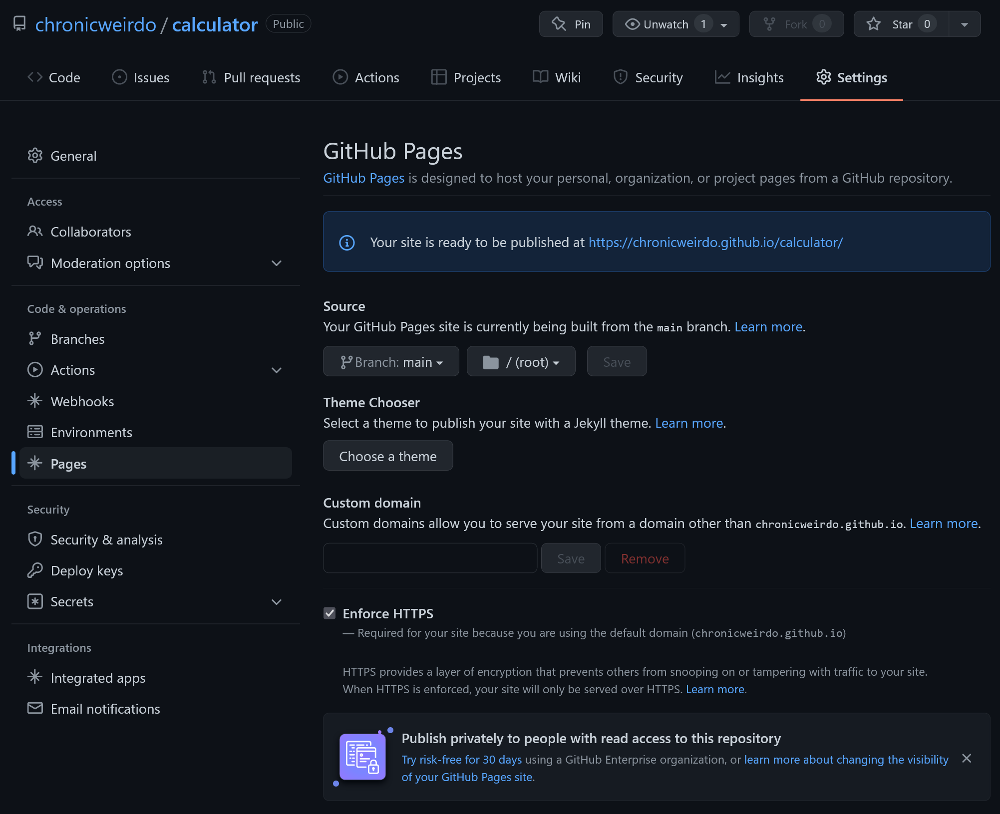

home / 2022.01.26 12:00 / javascript / progressive web app / ux / github
Recently I needed a more complex calculator than the iOS default. I needed an app where I can edit whole expressions, and maybe go back and correct parts of the expression. I needed something where I can use parantheses to nest calculations. Much of this functionality can be found in the iOS Calculator app, but it has surprisingly poor UX. When you enter something new, the previous calculation result dissapears from the UI, so you won't know what previous number you are applying your current operation to. If you want to nest operations with parantheses, the iOS Calculator has those, but to access them you need to disable the rotation lock of your phone and flip the phone in landscape. Even once you have access to the parantheses, you won't see the full expression you have typed, only the current number. The only way to know how many parantheses you have open, and where you are in the calculation, is to have a very good memory. Or use a piece of paper and have a good attention span.
So the iOS Calculator wasn't a good option for me, which is why I started looking for a calculator app on the App Store. There are some options available, filled with ads, thus tracking, until you buy the app. Some of those options don't even let you buy the app, but offer a subscription. I have not checked in detail what may justify that approach, but from a general perspective paying a monthly subscription to use a simple calculator seems hilariously absurd.
But because of the time wasted trying to understand how to use the default calculator app, and then trying to pick one of the weirdly monetized options available on the App Store, I had delay enough to realise I have another option. And since I generally try to solve my problems with something other than money whenever possible, I decided to make an exercises of it and implement my own approach to a calculator.
I'll explain what this calculator app is in this article, looking at parts of the functionality and the code used to implement it, going over some UX/UI considerations, and explaining how you can make a web app work as a progressive web app that can be installed on your mobile device, as well as how you can "host" your app for free on GitHub Pages.
Implementing a calculator should be easy enough with HTML and JavaScript. There are even options to evaluate JavaScript expressions easily (if not safely) so I wouldn't have to write my own expression parser. This app can then be served as a progressive web app on both iOS and Android. This means that you can put a link to the app on your mobile home screen, and the app is displayed visually similar to a native app (a separate browser window, no browser controls like an address bar). With modern JavaScript we even have access to local storage on the user's browser, so implementing a memory mechanism for the calculator would also be easy.
Maybe the only possible complication would be to find a way to host this app. Before the app gets installed on your mobile as a progressive web app, it must be downloaded from a server. But a calculator app does not need a dynamic backend, all we need to do is to serve the static asset, a single web page, containing HTML, CSS, JavaScript. And a free way to serve static web pages would be to use GitHub Pages.
The correct way to evaluate a mathematical expression is to create a parser that
will accept the expression, break it down into tokens, arrange those tokens
into a syntax tree and then evaluate
the tree. If you implement this from scratch, you decide what expressions are
supported by your system and how they are computed. Every programming language
has a parser that will do this work when evaluating your code. Some programming
languages are interpreted, meaning the program is not converted into machine
bytecode before being executed, but it is executed by evaluating the program
language in real-time by some virtual machine. JavaScript is traditionally
an interpreted language, and like many interpreted languages it offers us
access to its own interpreter through the eval function.
The eval function will take a string value and parse it and evaluate it.
This means we can just give the eval function a string of a complex
mathematical expression, with parantheses and all other mathematical functions
supported by JavaScript, and the eval function will do all the work and give
us the result. However, don't use eval! eval is seen as a risk because of
multiple factors. First, it's a security risk. Any valid JavaScript code we pass
to it will be evaluated and executed. If we pass user input to the eval
function, we give our users the power to execute anything within our application
context. eval is also run within the scope where it is invoked, giving
malicious users opportunity to get information from and change information in
that
scope. Another problem is with the performance of the code executed within an
eval call. While JavaScript is traditionally an interpreted language,
with code served over the internet interpreted by the browser JavaScript engine,
modern JavaScript engines have many optimizations focused on JavaScript execution
performance, sometimes even compiling the JavaScript code to machine code to
achieve better performance. This can't be done if the JavaScript engine doesn't
know what the input code of the eval function will be.
A better alternative
to evaluate JavaScript expressions is to use window.Function(). The main
advantage here is that the code passed to Function will be executed in a new
context, reducing the security impact. It can also be more efficient, especially
if you use the use strict instruction. With this in mind, our expression
evalutation can be done as follows:
function calculate(){
let eq = document.getElementById("equation")
let resultElement = document.getElementById("result")
resultElement.classList.remove(HAS_RESULT_CLASS)
try {
let expression = eq.value
let result = Function('"use strict";return (' + expression + ')')()
resultElement.innerHTML = result
resultElement.classList.add(HAS_RESULT_CLASS)
} catch (error) {
resultElement.innerHTML = "?"
}
eq.focus()
}
In order to compute whatever complex mathematical expression we have written in
the equation element, all we have to do is to get the contents of that element
and pass them to a new Function object, where they will be evaluated. If
the evaluation is successful, we can put the result in the result element.
If there is a problem with the evaluation, we must catch the error and
we can clear the result element, or add some other sign that the computation
failed.
This very easily solves our problem of interpreting complex mathematical expressions, but even with this approach we are opening up the application to some risk, since any valid code written into the input field will be evaluated without additional validation. As an example, see how the following input changes the application background color:
To make sure the app will not be susceptible to attacks like this, we must prevent user input from being evaluated if the user wrote anything in there that is not valid for our calcualtor app. Since this is still a basic calculator, without scientific functions, we can just make sure the input only contains numbers, parantheses, the decimal dot and the basic mathematical operations we support. We can do this check with the following function:
function validateInput(expression) {
for (let i = 0; i < expression.length; i++) {
if (! '0123456789.()+-*/ '.includes(expression.charAt(i))) {
throw new Error("invalid input")
}
}
}
I also wanted to add a memory function to the calculator, but one more advanced than what the default app would have. This memory should allow the user to store more than one value. More than that, since this calculator is focused on complex expressions, users should be able to store the full expression in the calculator memory, then load and edit stored expressions at a later time. In addition, as a quality of life feature, users should have the option to give names and edit the names of the expressions stored in memory. And of course, delete memory entries that are no longer needed.
All these features can be implemented using the local storage that modern browsers provide to web applications. There are two disadvantages to storing data just in the local storage of the browser. This data is only available on the device/browser that was used to store it. The app, when opened on another device, will have completely different memory entries. But for the purpose of this project syncing memory entries across devices is not necessary. This sync could only be done with a backend part of the app, which is not the purpose of the current project.
The second disadvantage is that if the user cleans their browser history they will also delete the stored memory entries. But this problem can also only be solved with user accounts and a backend where these entries could be stored more permanently, again not the purpose of this project.
function memSave() {
let equation = document.getElementById("equation").value
let resultElement = document.getElementById("result")
let result = null
if (resultElement.classList.contains(HAS_RESULT_CLASS)) {
result = resultElement.innerHTML
}
let date = new Date()
let name = dateToString(date)
// save this value
let val = {
eq: equation,
res: result,
name: name,
ts: date.getTime()
}
window.localStorage.setItem(equation, JSON.stringify(val))
}
The above function will save the current expression and result, if it exists, to
memory. We use window.localStorage.setItem to do this. The local storage is a
key-value store that holds strings in both the key and value. To store an object
there we will need to use JSON.stringify to serialize it to string. When
loading the object string from memory we can parse it with JSON.parse. The
key used for storing entries to memory is the expression itself. This way, if
the user presses the "M" multiple times we don't create multiple memory
entries for the same expression.
The memory screen is designed to be simple to use. When adding something to memory, the date and time are used as the label of that memory entry, but the displayed label is editable and can be changed to any text the user wants. Memory entries are sorted by their label, so the user can choose names that help them control the order of the stored expressions. All buttons are large, suited for touch screens. The delete button is clearly color coded with red. The memory UI does not display unnecessary elements. If the memory entry contains just a number, only a button with that number is present (see first entry in screenshot). Users can also store incomplete and thus invalid expressions to memory, to be loaded and completed later. When this is the case, we don't have a result, so only the button containing the expression is present (see last entry in screenshot). When the expression is valid and has a result, we have two buttons. The first one will insert the full expression in the main screen expression input area, the second will insert just the result. The result is a simple and intuitive design that packs a large amount of functionality.
The target system for this app is a mobile device, and the design reflects this mainly in the use of large buttons. The UI also has buttons to move the caret left or right inside the expression field, for when touch-dragging the caret is not accurate enough. But the various input elements in the app must also be configured to expect touch input. I do this through some CSS settings, preparing UI elements for touch manipulation and disabling text hold-select for buttons:
* {
font-family: 'Roboto Mono', monospace;
padding: 0;
margin: 0;
touch-action: manipulation;
}
*:focus {
outline: none;
}
button {
user-select: none; /* standard syntax */
-webkit-user-select: none; /* webkit (safari, chrome) browsers */
-moz-user-select: none; /* mozilla browsers */
-khtml-user-select: none; /* webkit (konqueror) browsers */
-ms-user-select: none; /* IE10+ */
}
The app is also providing its own keyboard, buttons with only the supported
inputs, so when users select the text area holding the
expression the mobile device should not display a keyboard. This is done with
the following setup of the expression text area (see inputmode):
<textarea id="equation" name="equation" inputmode="none" onchange="calculate()" onkeyup="calculate()" onfocus="calculate()"></textarea>
I also wanted to prevent information loss on a touchscreen when a button may be tapped by mistake. To prevent situations where a user deletes the typed expression by tapping the "C" button by mistake, or deletes a memory entry, I've made these deletion operations work only when a long press is used on their buttons. Here's how this long press is set up for a few of the buttons in the UI:
function setupLongPress(element, shortPressAction, longPressAction,
targetColor) {
element.onclick = null
let pressStartTimestamp = null
let pressCanceled = false
let pressActivateThreshold = 400
let pressCheckStep = 100
let originalBackgroundColor = null
let startPress = function(event) {
if (event) {
event.preventDefault()
}
if (pressStartTimestamp == null) {
pressStartTimestamp = +new Date()
originalBackgroundColor = decodeRgb(
window.getComputedStyle(element, null)
.getPropertyValue('background-color')
)
}
if (pressCanceled) {
pressStartTimestamp = null
pressCanceled = false
element.style.backgroundColor = encodeRgb(
originalBackgroundColor
)
return false
} else {
let diff = +new Date() - pressStartTimestamp
if (diff >= pressActivateThreshold) {
if (longPressAction) longPressAction()
pressStartTimestamp = null
pressCanceled = false
element.style.backgroundColor = encodeRgb(
originalBackgroundColor
)
return false
} else {
let newColor = transitionRgb(
originalBackgroundColor,
targetColor,
diff/pressActivateThreshold
)
element.style.backgroundColor = encodeRgb(newColor)
setTimeout(startPress, pressCheckStep)
}
}
}
let endPress = function(event) {
if (event) {
event.preventDefault()
}
if (pressStartTimestamp != null) {
if (shortPressAction) shortPressAction()
pressCanceled = true
}
}
element.addEventListener("touchstart", startPress, false)
element.addEventListener("touchend", endPress, false)
element.addEventListener("mousedown", startPress, false)
element.addEventListener("mouseup", endPress, false)
}
These long press buttons can have two different actions, one for normal
press/tap, and another one for long press. We decide if it's a long or a short
press by counting the time the user holds the button. If this time is above some
threshold it's
considered a long press. A good threshold for this is 400 milliseconds. The
startPress function will save the press start timestamp, and then keep
invoking itself through the setTimeout function and checking for two things:
if the press threshold has been exceeded and if the user canceled the press.
If the threshold has been exceeded, the long press action is invoked; if not,
the short press action is invoked. The endPress function cancels the press
action. This long press functionality also visually informs the user that they
are pressing the button by transitioning the button background color towards a
desired targetColor, this transition being computed by the transitionRgb
function.
#controls {
display: grid;
grid-template-columns: repeat(4, 25%);
grid-template-rows: 44% repeat(7, 8%);
grid-template-areas:
'eqa eqa eqa eqa'
'equ res res res'
'cls lef rig mps'
'bsp pop pcl mem'
'b7 b8 b9 div'
'b4 b5 b6 mul'
'b1 b2 b3 min'
'b0 b0 pt pls'
;
}
@media (orientation: landscape)
{
#controls {
grid-template-columns: 60% repeat(4, 10%);
grid-template-rows: repeat(7, auto);
grid-template-areas:
'eqa equ res res res'
'eqa cls lef rig mps'
'eqa bsp pop pcl mem'
'eqa b7 b8 b9 div'
'eqa b4 b5 b6 mul'
'eqa b1 b2 b3 min'
'eqa b0 b0 pt pls'
;
}
#controls.left {
grid-template-columns: repeat(4, 10%) 60%;
grid-template-rows: repeat(7, auto);
grid-template-areas:
'equ res res res eqa'
'cls lef rig mps eqa'
'bsp pop pcl mem eqa'
'b7 b8 b9 div eqa'
'b4 b5 b6 mul eqa'
'b1 b2 b3 min eqa'
'b0 b0 pt pls eqa'
;
}
}
Another touchscreen scenario was to make the application usable in landscape
mode. For this I have different CSS setups for portrait and landscape modes,
with landscape mode having two separate configurations, one for right-handed
users and
another for left-handed users. This is done using CSS display: grid; with
clear grid areas occupied be each element in the UI. These areas are
rearranged based on the screen orientation and
a class for left-handed setup, only in landscape mode.
Switching between the right-handed and
left-handed modes is done with a long press on the caret move buttons. The
landscape mode is also saved to the local storage so the preferred setup
is reaplied next time the user opens the app.
To add functionality for users to install this app as a progressive web app, we must first add a manifest file, a JSON file that contains information about the app, including its icons, theme color and app URL.
{
"name": "chronicalc",
"description": "The Chronicalc web app is an advanced calculator that can be installed as a progressive web app.",
"lang": "en-US",
"icons": [
{
"src": "shortcut192.png",
"sizes": "192x192",
"type": "image/png"
}
],
"start_url": "https://chronicweirdo.github.io/calculator/",
"display": "standalone",
"theme_color": "#1a1a1a"
}
Then, we must refer this manifest file from our main HTML page, and also include
some extra information, like icons, theme color, to ensure the website is also
functioning in sync withe the progressive web app setup. The viewport entry is
also important to try and prevent
some functionality in mobile browsers that is very useful for classic, document
style web pages, but not appropriate for a single screen web app; features like
pinch zooming or double tap zooming.
<!DOCTYPE html>
<html>
<head>
<meta charset="utf-8"/>
<meta name="viewport"
content="user-scalable=no, width=device-width, initial-scale=1.0, maximum-scale=1.0, minimum-scale=1.0, height=device-height">
<meta name="apple-mobile-web-app-capable" content="yes">
<meta name="apple-mobile-web-app-status-bar-style" content="black">
<meta name="theme-color" content="#1a1a1a">
<link rel="manifest" href="manifest.json">
<link rel="shortcut icon" href="shortcut192.png">
<link rel="icon" href="shortcut192.png">
<link rel="icon" sizes="192x192" href="shortcut192.png">
<link rel="apple-touch-icon" href="shortcut192.png">
With these settings, you can next add your app to the home screen of your preferred mobile device and have it work similarly to a native app.
And of course, to serve this app to the world you can use GitHub Pages. Go on your GitHub project page and, under the "Settings" tab select the Pages section. Configure the branch you want to use for GitHub Pages, probably the "master" branch. Then you GitHub Pages link will be available, and you can use this link to open the app on your mobile device, and then install it as a progressive web app.

If you want to look at the code in more detail, visit the project on GitHub, and if you want to install the calculator app and start using it now click here.